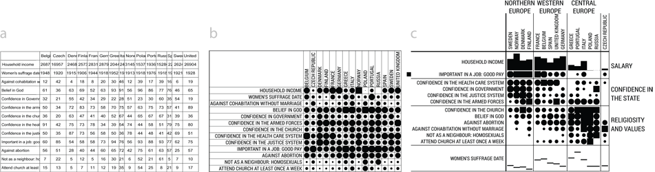
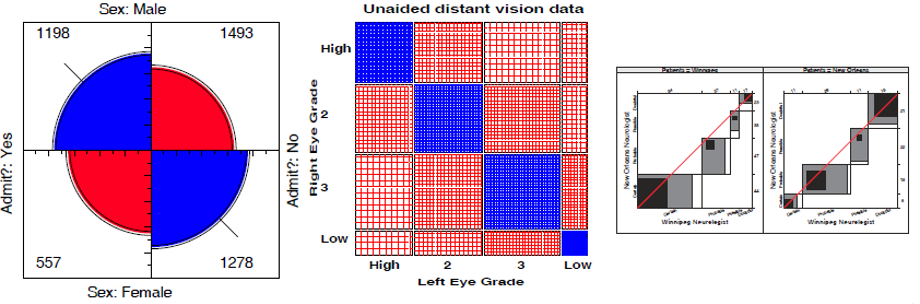
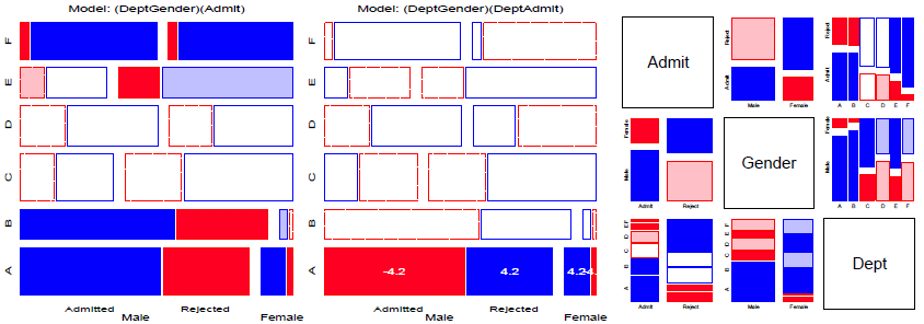
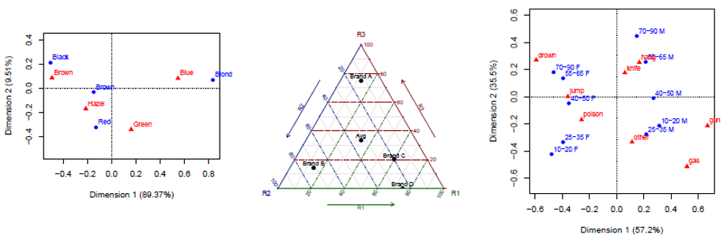
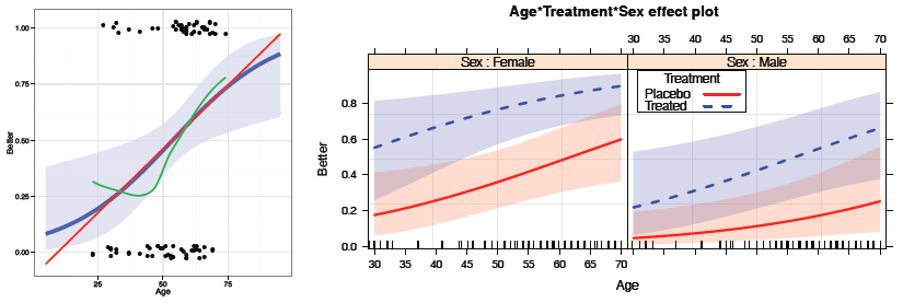
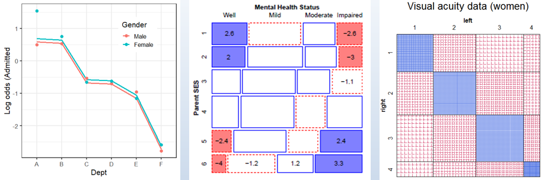
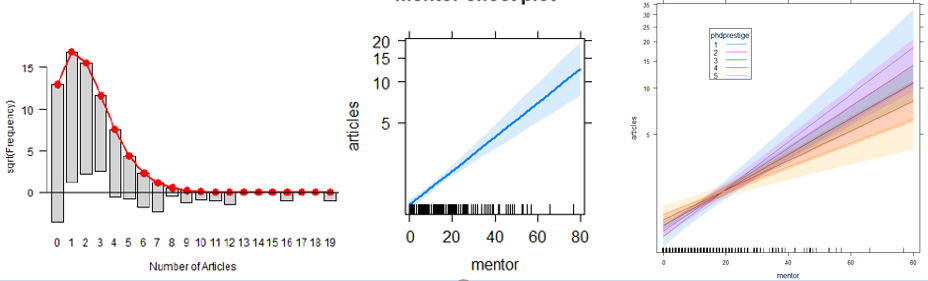
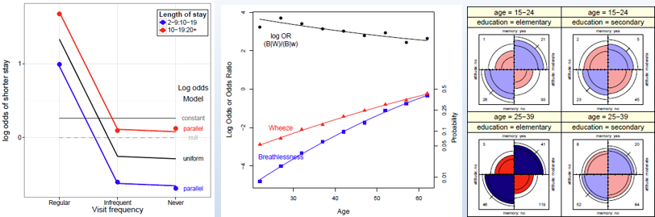

Psy 6136: Categorical Data Analysis
Michael Friendly
Winter, 2023
Course Description
This course is designed as a broad, applied introduction to the statistical analysis of categorical (or discrete) data, such as counts, proportions, nominal variables, ordinal variables, discrete variables with few values, continuous variables grouped into a small number of categories, etc.
The course begins with methods designed for cross-classified table of counts, (i.e., contingency tables), using simple chi square-based methods.
It progresses to generalized linear models, for which log-linear models provide a natural extension of simple chi square-based methods.
This framework is then extended to comprise logit and logistic regression models for binary responses and generalizations of these models for polytomous (multicategory) outcomes.
Throughout, there is a strong emphasis on associated graphical methods for visualizing categorical data, checking model assumptions, etc. Lab sessions will familiarize the student with software using R for carrying out these analyses.
Course and lecture topics are listed below, in a visual overview.
- See the Course schedule for details of readings, lecture notes, R scripts, etc.
- For students, see Assignments and Evaluation
Overview & Introduction

Topics
- Course outline, books, R
- What is categorical data?
- Categorical data analysis: methods & models
- Graphical methods
Lecture notes
Readings
Bold face items are considered essential. When there are assignments, some supplementary readings are mentioned there.
Assignment
Discrete Distributions
Discrete distributions are the gateway drug for categorical data analysis. Meet some — binomial, Poisson, Negative Binomial, and others — who will become your friends as you learn to analyze discrete data.
More importantly, learn some nifty graphical methods for fitting these distributions and understanding why a given one might not fit well.

Topics
- Discrete distributions: Basic ideas
- Fitting discrete distributions
- Graphical methods: Rootograms, Ord plots
- Robust distribution plots
- Looking ahead
Lecture notes
Readings
- DDAR: Ch 3
Quiz
Two-way Tables
How can we test for independence and measure the strength of association in two way tables? Get acquainted with some standard tests and statistics: Pearson \(\chi^2\), Odds ratio, Cramer’s \(V\), Cohen’s \(\kappa\) and even Bangdiwal’s \(W\).
More importantly, how can we visualize association? We’ll meet fourfold plots, sieve diagrams, spine plots. Much of this is prep for understanding how to formulate, test and visualize models for categorical data.

Topics
- Overview: \(2 \times 2\), \(r \times c\), ordered tables
- Independence
- Visualizing association
- Ordinal factors
- Square tables: Observer agreement
- Looking ahead: models
Lecture notes
Readings
- DDAR: Ch 4
- Agresti, Ch 2
Quiz
Loglinear models & mosaic displays
Some people think nothing is prettier
Than algebra of models log-linear.
But I've got the hots
For my mosaic plots
With all those squares in the interior.— by Michael Greenacre (see his Statistical Songs, https://www.youtube.com/StatisticalSongs)

Topics
- Mosaic displays: Basic ideas
- Loglinear models
- Model-based methods: Fitting & graphing
- Mosaic displays: Visual fitting
- survival on the Titanic
- Sequential plots & models
Lecture notes
Readings
- DDAR: Ch 5
- Agresti, 2.7; Ch 7
Quiz
Correspondence Analysis
Correspondence analysis (CA) is one of the first things I think of when I meet a new frequency table and want to get a quick look at the relations among the row and column categories. Very much like PCA for quantitative data, think of CA as a multivariate juicer that takes a high-dimensional data set and squeezes it into a 2D (or 3D) space that best accounts for the associations (Pearson \(\chi^2\)) between the row and column categories. The category scores on the dimensions are in fact the best numerical values that can be defined. They can be used to permute the categories in mosaic displays to make the pattern of associations as clear as possible.

Topics
- CA: Basic ideas
- Singular value decomposition (SVD)
- Optimal category scores
- Multiway tables: MCA
Lecture notes
Readings
- DDAR: Ch 6
Logistic regression
Logistic regression provides an entry to model-based methods for categorical data analysis. These provide estimates and tests for predictor variables of a binary outcome, but more importantly, allow graphs of a fitted outcome together with confidence bands representing uncertainty,

Topics
- Model-based methods: Overview
- Logistic regression: one predictor, multiple predictors, fitting
- Visualizing logistic regression
- Effect plots
- Case study: Racial profiling
- Model diagnostics
Lecture notes
Logistic regression: Extensions
The ideas behind logistic regression can be extended in a variety of ways. The effects of predictors on a binary response can incorporate non-linear terms and interactions. When the outcome is polytomous (more than two categories), and the response categories are ordered, the proportional odds model provides a simple framework. Other methods for polytomous outcomes include nested dichotomies and the general multinomial logistic regression model.

Topics
- Case study: Survival in the Donner party
- Polytomous response models
- Proportional odds model
- Nested dichotomies
- Multinomial models
Lecture notes
- 1up PDF || 4up PDF
- Bonus lecture: Deep Questions of Data Visualization
Extending loglinear models
Here we return to loglinear models to consider extensions to the
glm() framework. Models for ordinal factors have greater
power when associations reflect their ordered nature. The
gnm package extends these to generalized
non-linear models. For square tables, we can
fit a variety of specialized models, including
quasi-independence, symmetry and
quasi-symmetry.

Topics
- Logit models for response variables
- Models for ordinal factors
- RC models, estimating row/col scores
- Models for square tables
- More complex models
Lecture notes
GLMs for count data
Here we consider generalized linear models more broadly, with emphasis on those for a count or frequency response variable in the Poisson family. Some extensions allow for overdispersion, including the quasi-poisson and negative binomial model. When the data exhibits a greater frequency of 0 counts, zero-inflated versions of these models come to the rescue.

Topics
- Generalized linear models: Families & links
- GLMs for count data
- Model diagnostics
- Overdispersion
- Excess zeros
Lecture notes
Models and graphs for log odds and log odds ratios
Logit models for a binary response simplify the specification and interpretation of loglinear models. In the same way, a model for a polytomous response can be simplified by considering a set of log odds defined for the set of adjacent categories. Similarly, when there are two response variables, models for their log odds ratios provide a new way to look at their associations in a structured way.

Topics
- Logit models -> log odds models
- Generalized log odds ratios
- Models for bivariate responses
Lecture notes
Readings
- Friendly & Meyer (2015), General Models and Graphs for Log Odds and Log Odds Ratios
Wrapup & summary: The Last Waltz
A brief summary of the course.
Topics
- Course goals
- What have I tried to teach?
- Whirlwind course summary
- Your turn: what did you like/dislike about the course?
Lecture notes
Copyright © 2018 Michael Friendly. All rights reserved. || lastModified :
friendly AT yorku DOT ca
 orcid.org/0000-0002-3237-0941
orcid.org/0000-0002-3237-0941